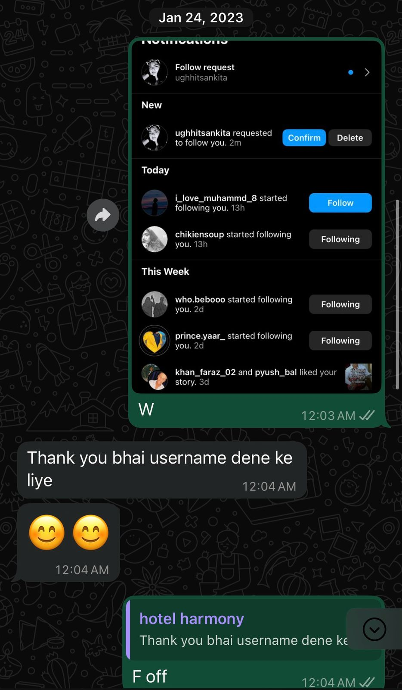
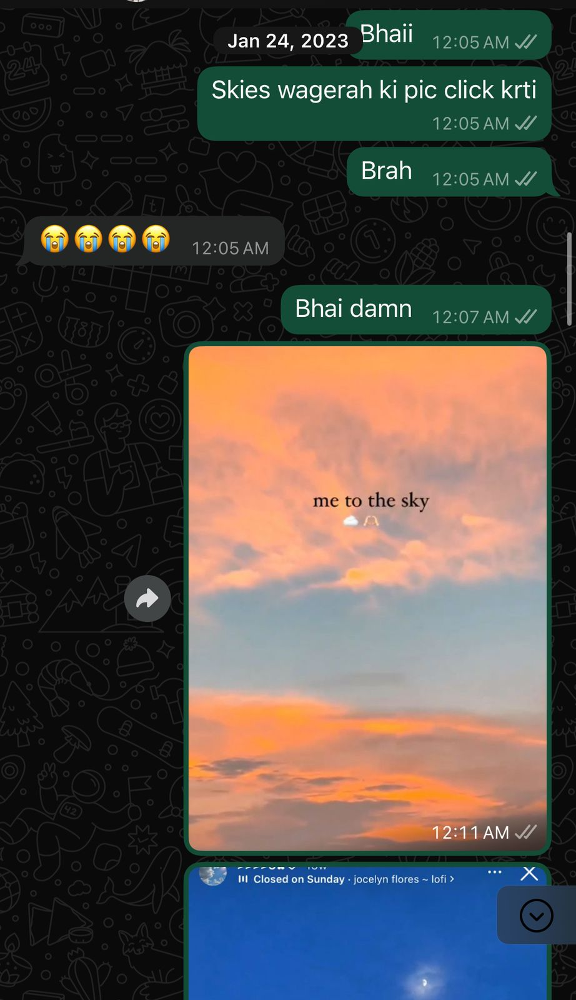
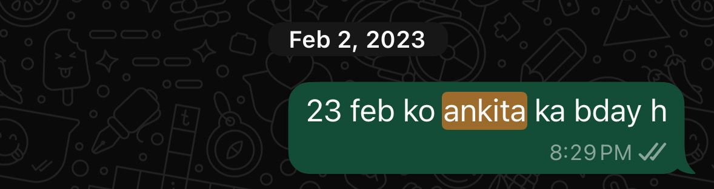
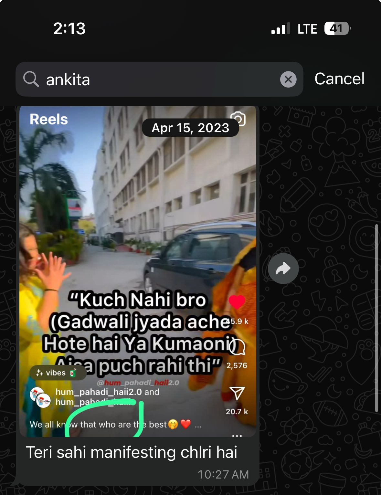
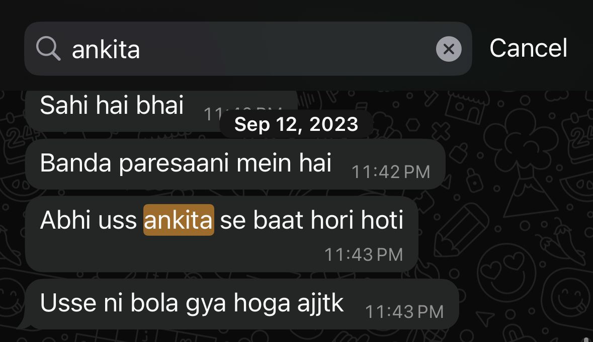
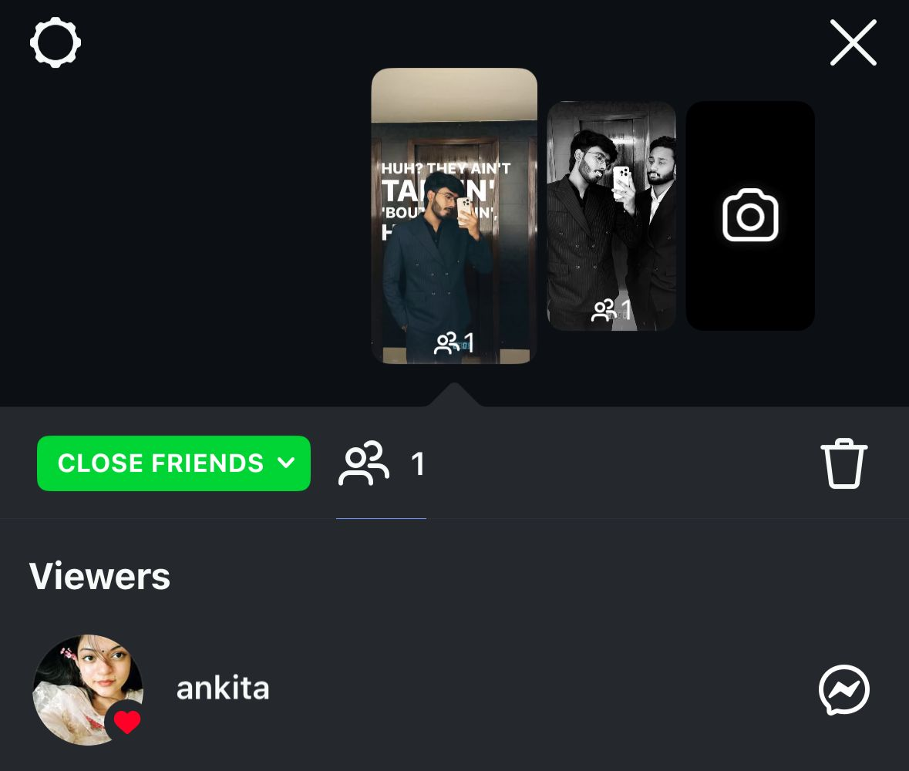

Introduction
I know this might come out of nowhere, and I completely understand if it feels sudden. But I’ve been thinking about this for a while now, after typing, retyping and backspacing, i decided to let it all out unlike last time in 2023 and I needed a way to let it out—it was getting heavy. So as you once told me I should work on refining my skills, I did. But this time, I ended up using it for something far more personal than professional. I’m not here with expectations—I just want to be honest, with full transparency.
How & When It All Started.
It goes way back to when you joined the group chat, around September or October 2022. I’ve liked you since then—before we even started talking. I admired you from afar. I wasn’t the type to always jump into chats, but I used to quietly join the conversation when you did. You might not remember much from then, or maybe you think your past decisions were questionable, but I remember exactly how I saw you back then: mature, focused, thoughtful. Even your voice notes from those days stuck with me.
We shared similar interests too, and that caught my attention. I didn’t just find you pretty or cute—it was deeper than that, we had not even added each other until January 2023 when you sent me the follow req and in the ss you can see how i reacted to that, anyways, I liked the way you carried yourself. We didn’t talk much, but I had a sense of the kind of person you were, and I admired that. Though at the time, I quietly backed off and kept those feelings to myself.
In late 2023, I got into a relationship. That went through a break November and ended permanently in January 2025. I took time to process everything and tried to move forward.
In February, I wished my ex a happy birthday with a sweet gesture as our breakup was recent then some things happened and i realised I had moved on, Three months after my breakup, On Eid, we started talking, and i had to wake up at 7 but when were talking I couldn’t help but notice that you’re exactly the kind of person I thought you'd be. I liked you even before we started talking, and it just became clearer to me the more we spoke so i just couldn't leave the conversation because i was into you, eventually the sun came up and you went, then the next two days went hectic and i could not talk to you properly and damn, the way i was thinking abt it.
Screenshots
I’ve added a few screenshots from my past conversations w my friend to give you a bit of context and show you that this isn’t something I’m saying out of nowhere. I know it’s hard to believe, and I didn’t want you to be left wondering if I was being genuine. Hopefully, these will help you understand where I’m coming from. Scroll down for screenshots.



I was confused between 26 Feb and 23 Feb back then.


Move to Entry #4
Why I Didn’t Confront You Earlier
There were many reasons. At one point, I thought you were in a relationship, and I didn’t want to interfere. I also wasn’t into e-dating. It never felt right to me, it always seemed unserious and casual, and I’ve always been too genuine for that. I wasn’t ready to suddenly start simping or chasing without understanding if it was even the right thing to do. you seemed much more than that to me. I wasn’t sure if that would be the right way to go about it, so I kept my feelings to myself and eventually backed off.
Feelings I Couldn’t Share
I’m not someone who opens up easily. The things I’ve shared with you—I haven’t even shared with people in my real life. But with you, it felt natural. It felt safe. That’s how much I valued our conversations.
There were many times I wanted to say more, but I didn’t. Like when you’d tell me those brainrot jokes—I genuinely wanted to hear your voice more, so I’d say something like “these jokes would sound funnier in your voice.” And when you sent me that video, I kept looking at it, thinking, “Damn, you're so cute, i should totally get you ek nazar wala bracelet.” But I didn’t say anything because I was scared it’d creep you out or make you ghost me.
I even thought about asking for your number so I could just call you and say all this directly, but I felt it would come off as too much, too soon. I thought you wouldn’t be comfortable, and maybe you’d just disappear instead. So, again, I kept quiet.
The Unease of Ghosting
I have to be honest—when you ghosted me, it made me feel really uneasy. I started overthinking everything. One moment I was out with my friends sulking, the next I saw your notif pop up again and I was like, "Bata kya khayega?" I felt relieved.
But then again, you got distant. And then suddenly, you texted again. And I knew I couldn’t keep holding this in. I had to let you know how I felt.
Because it wasn’t just about talking to you. It was because of who you are.
Baat esi nahi ki koi baat karne wala nahi tha, baat esi h ki teri wali baat nahi thi kisi ki baaton me.
I’m not saying you misled me or anything like that. I just wanted to be honest and express my feeling because it was getting very heavy to hold on to, emo intelligent hu toh i know it's not mutual and maybe i should have kept it to myself but emo weak bhi hu toh i could not keep it to myself ab.
Posting That Story
I don’t click or post my pictures online. My camera’s full of everything but me. But that time, I did it for a reason. I wanted you to know who this guy was, the one who’s writing all this. I didn’t want it to be an anonymous shallow faceless confession. I didn’t care about anyone else seeing it. I literally added only you to my close friends just so you’d know me.

What I Want You to Know
I don’t expect a relationship. I’m not waiting for you to feel the same. That’s not what this is. I just didn’t want you to stay clueless.
You’ve been on my mind for a long time—not because of anything you did intentionally, but because of who you are, even when we didn't talk, I used to notice your name in my story views. Even during the time when you stopped coming online, That didn’t go unnoticed. I’ve liked you for a long time. And not just because we talked. It was about your personality, your thoughts, your values and the fact that you are oh-so-damn-pretty was cherry on top.
I won’t go overboard and say I’m in love with you. But if things had gone a little deeper—I know I would have undeniably fallen for you.
Respecting Your Boundaries
I know you fear commitment and relationships—you’ve said it yourself. And I completely understand that. I’m not here to make things hard for you. I don’t want this to be heavy on you. I want this to be as easy as it can be.
So please know—there’s no pressure. You don’t have to respond. You don’t have to say anything unless you feel like it. Just make it feel seen.
Reassurance
I get that this might be shocking or hard to believe, especially because I’ve kept it to myself all this time. It’s a lot. But I hope you can feel the honesty in it.
If it feels sudden, I’m sorry. I just didn’t want to keep it in anymore.
Take your time. Don’t rush yourself. I’ll be okay with however you feel about this—as long as you know.
Closure
I also have this idea of you being very casual abt it and the way you were with me might be the way you are w everyone tho what i felt was from way before so i dont want you to think i felt like this just because some of our conversations if you’ve read this far, I just ask for one thing—a simple acknowledgment saying "i read it" no need for anything more unless you feel like talking. I hope this doesn’t make you feel too overwhelmed. Thanks for reading, and take care. I truly value our conversations, no matter what happens, I hope things stay good between us.